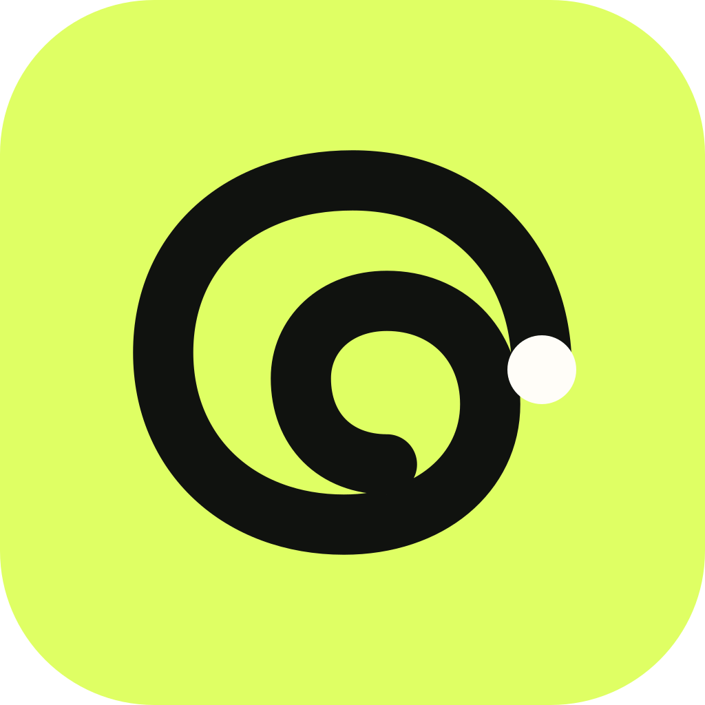

Unified workspace
Network rail, inbox, chat, context inspector.

claire / desktop appClaire Desktop is a complete messaging client with the speed, density, and keyboard fluency expected on macOS. Companion features—device setup, handoff, and local bridges—are built into the same product rather than shipped as a lesser utility.
Network rail, inbox, chat, context inspector.
Daily brief, device handoff, bridge health.
Global semantic search with keyboard control.
Cloud and on-device networks in one view.
iMessage permissions and Instagram authentication.
Relationship prompts with live reply preview.
A small companion window for active threads.
Shortcuts, notifications, privacy, sync, updates.
Auth expiry, retries, logs, reconnect flows.
Menu bar, Dock badge, share extension, notifications.
Each surface uses Claire’s warm, modular language while adopting desktop-native density, hover states, keyboard shortcuts, resizable panes, and contextual inspectors.
The main workspace uses a four-column model at wide widths and collapses the context inspector first. Network filtering lives in the rail; people and conversations remain the primary hierarchy.
Three quick actions, then your morning is clear.
Edited on iPhone · 2 minutes ago
5 results open on mobile
Cloud bridge
On this Mac
Needs re-auth
Cloud bridge
Can you send that deck?
That place looks perfect ✨
Due today · 10:00
Due today · 17:00
Companion value is additive: handoff, local bridge health, and cross-device drafts. The same home screen still works when the desktop app is the user’s only active Claire client.
Use the conversation, relationship context, and open promises to make the next move easier.
“Yes—we’re all set for tomorrow. I’ll send the updated deck by 10, and we can use the first few minutes to cover your comments.”
Ask Claire brings the mobile copilot to a full desktop workspace: a selected chat, reversible suggested actions, a natural-language composer, and always-visible context. Global semantic search remains one of its tools, not the entire product surface.
Four active networks · two available on this Mac

Cloud bridge · synced 10s ago

Cloud bridge · synced 8s ago

Uses Messages and macOS permissions.

Session expired · reconnect in browser.

Requires a future mautrix bridge.
Requires a future Matrix bridge.
The connection model distinguishes cloud bridges, desktop-authenticated sessions, and truly on-device bridges. “Connected” never hides where a credential lives or what must stay running.
macOS keeps these permissions separate. Claire will open the correct System Settings page for each one and verify access when you return.
The iMessage flow is desktop-native and permission-led. It reflects the real macOS requirement: Accessibility, Contacts, Messages data, and Automation access before the local connector can operate.
WhatsApp · maya@north.studio
Clear, human, confident
Polished and concise
Relaxed and natural
Light and expressive
Desktop gives relationship settings room for a live AI preview, making the effect of a custom prompt understandable before the user saves it.
Compact mode supports “companion” behavior without fragmenting the product into a separate app or menu-bar-only utility.
These reference components are the shared source for desktop mockups and the macOS client: fixed icon sizes, the collapsible rail, composable actions, and contact details.
Selected destinations use a quiet graphite surface with lime icon and label. Ask Claire is a standard destination in the same system.
Use outline icons at a single optical weight. Icons never carry color alone; labels and accessible names remain available.
The chat header opens a lightweight detail disclosure; the full relationship editor lives in People.
Claire never manufactures a chat. Start a new thread in its source app and it becomes available here after sync.
Every high-frequency action receives a shortcut, while visible controls preserve discoverability.
Cloud, desktop-authenticated, and on-device connections have distinct status and recovery language.
Context inspectors, inline promises, and search answers replace a disconnected chatbot destination.
Resizable panes, hover, menus, multi-select, drag-and-drop, and native notifications are product requirements.